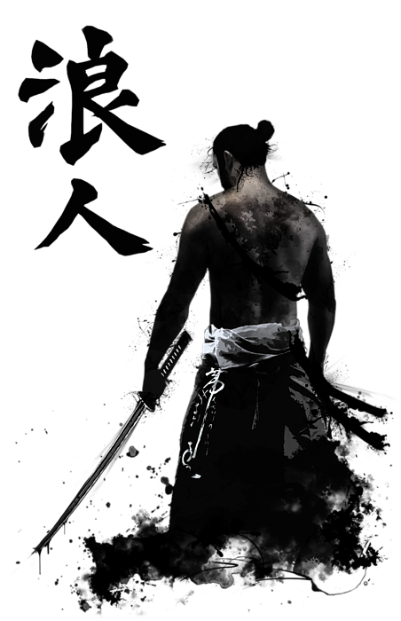

About

I was ready about Greek Philosophy and Stoicism and was really inspired by many of the stoicism practitioners in general. That led to the thought of creating a website around this topic for my assignment and well here we are.
This website was a project assigned to me by my Front End Development teacher. Feel free to re-use or modify the code/contents of this website.